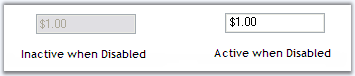

When the control is set to disabled, we could not make any changes in it. But we can make the text active by setting DrawActiveWhenDisabled to True.
|
CurrencyTextBox Property |
Description |
|
DrawActiveWhenDisabled |
Specifies whether the text should be drawn active even when the control is disabled. Enabled property must be set to False. |
The following figure illustrates this.

Figure 520: Text Active even when Control is Disabled